Если фото не подходит — напишите блюдо и страну, фото уберём или заменим. Статья — откуда взято фото.
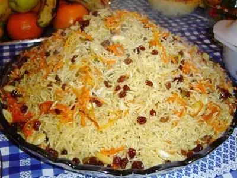
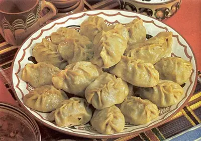
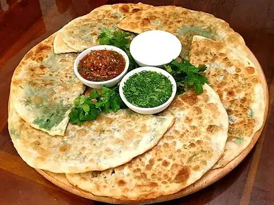
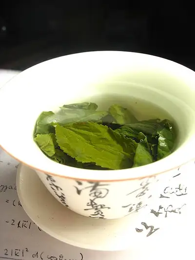
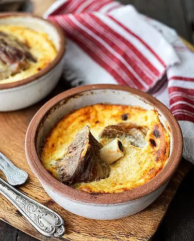
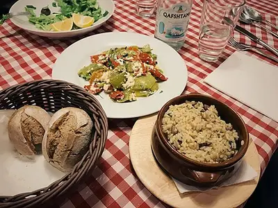
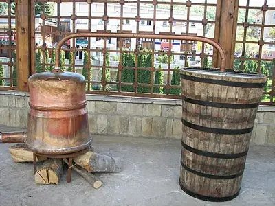
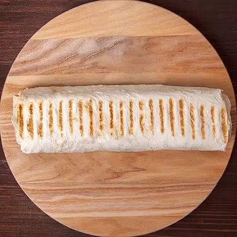
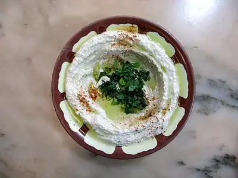
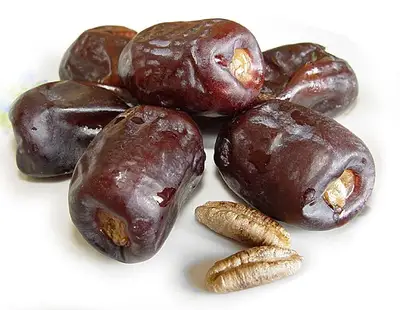
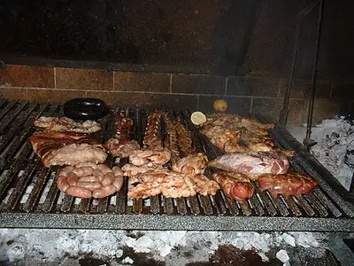
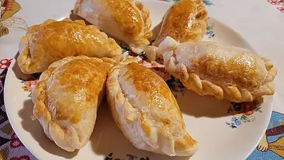
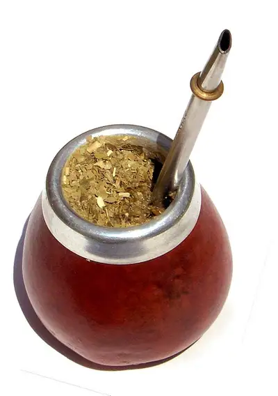
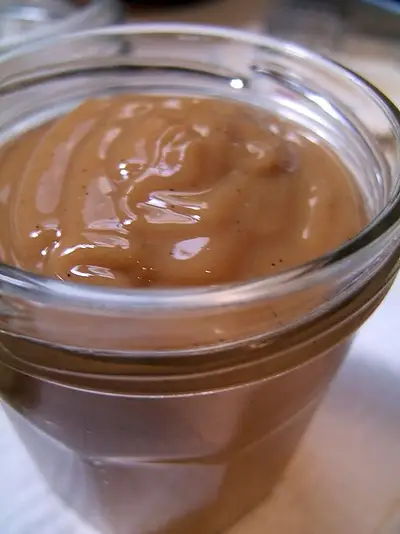
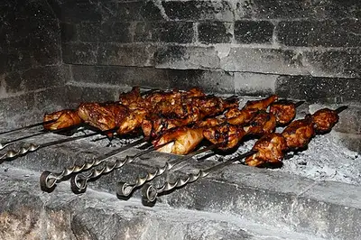
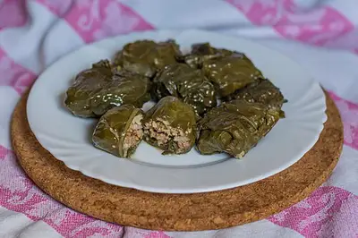
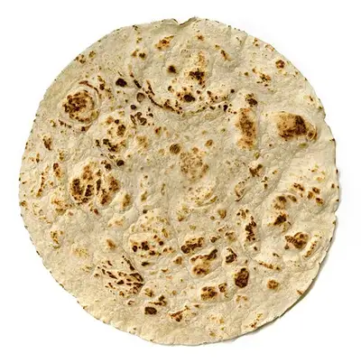
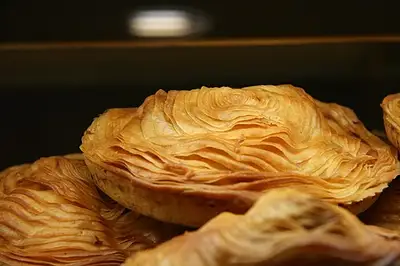
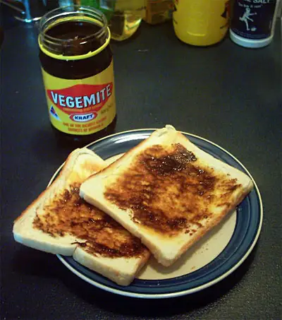
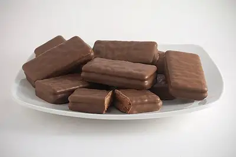
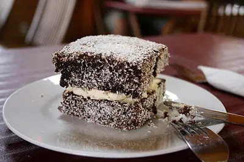
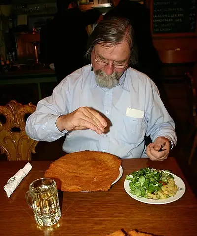
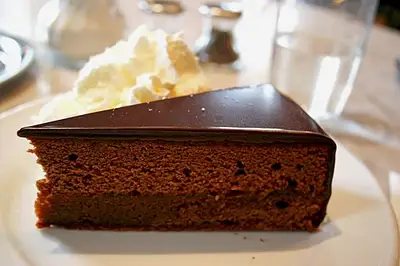
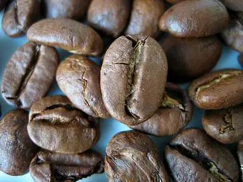
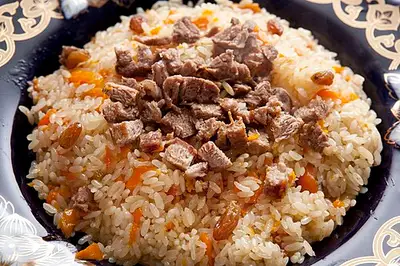
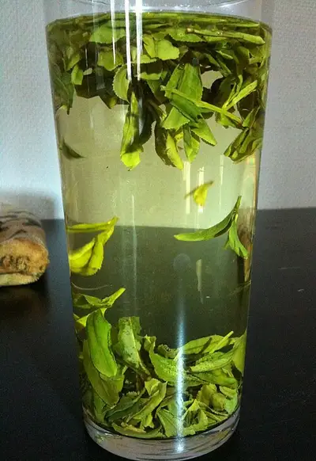
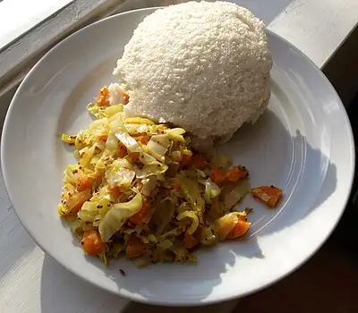
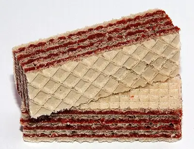
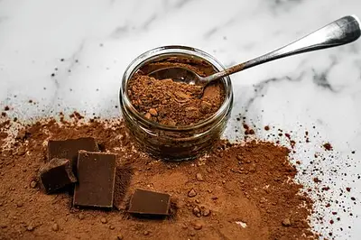
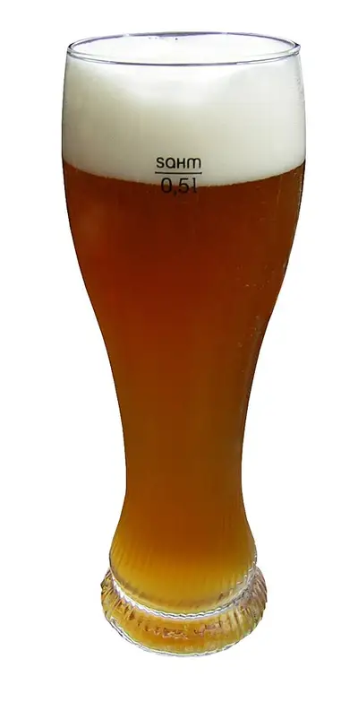
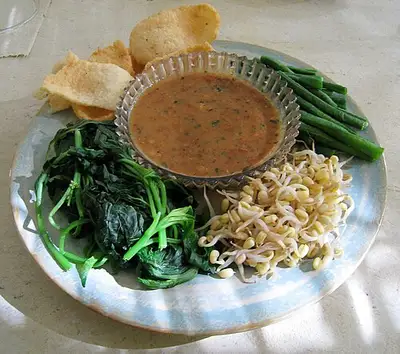
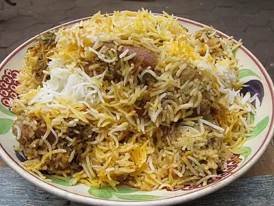
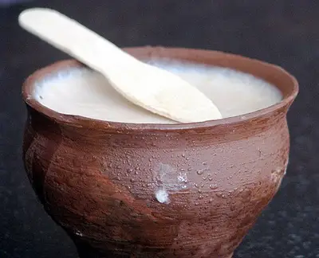
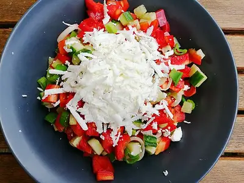
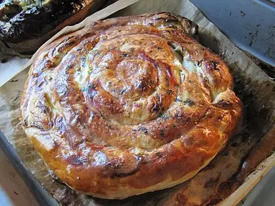
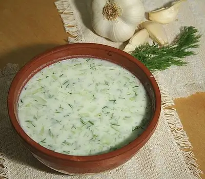
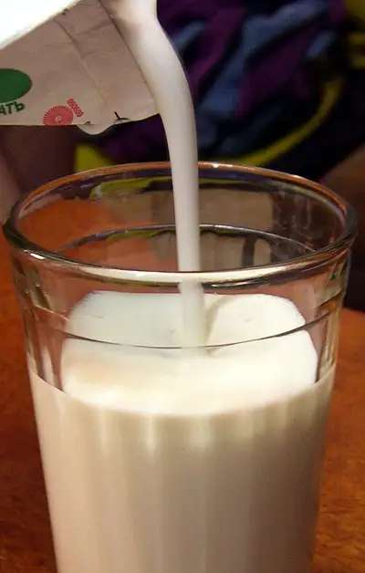
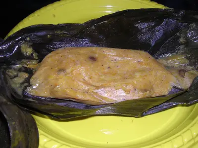
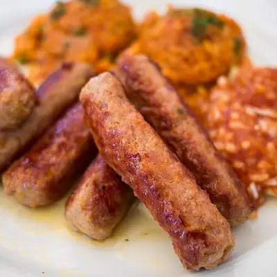
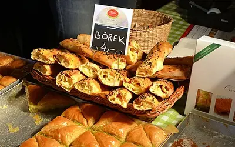
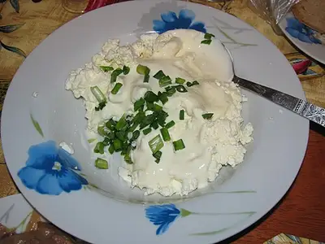
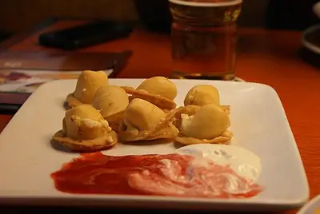
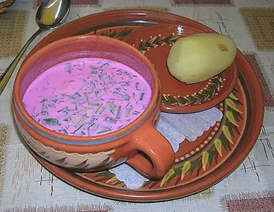
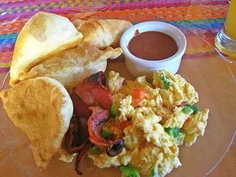
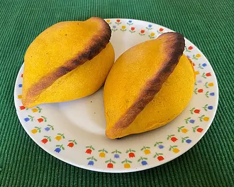
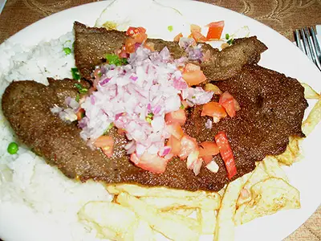
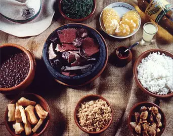
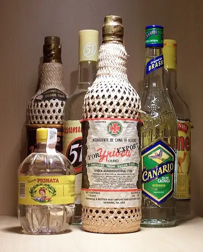
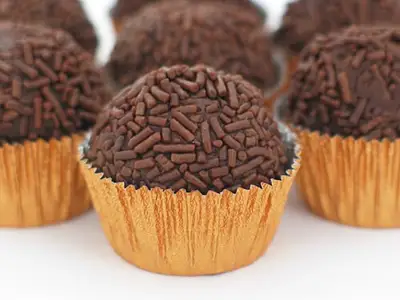
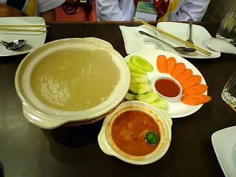
| Ангола | Фунжи | статья с фото не найдена |
| Ангола | Мукамба | статья с фото не найдена |
| Ангола | Калулу | статья с фото не найдена |
| Ангола | Кизаку | статья с фото не найдена |
| Албания | Бырек | статья с фото не найдена |
| ОАЭ | Мачбус | статья с фото не найдена |
| Армения | Армянский коньяк | статья с фото не найдена |
| Австрия | Кайзершмарн | статья с фото не найдена |
| Азербайджан | Шекерчурек | статья с фото не найдена |
| Бурунди | Бобы с бананами | статья с фото не найдена |
| Бурунди | Рыба из Танганьики | статья с фото не найдена |
| Бельгия | Мидии с картофелем фри | отклонено при проверке сетки |
| Бенин | Аманс (пате) | статья с фото не найдена |
| Бенин | Акассá | статья с фото не найдена |
| Бенин | Ватше | статья с фото не найдена |
| Буркина-Фасо | То | статья с фото не найдена |
| Буркина-Фасо | Ризгра | статья с фото не найдена |
| Буркина-Фасо | Бабенда | статья с фото не найдена |
| Буркина-Фасо | Брошеты | статья с фото не найдена |
| Бангладеш | Рыба илиш | статья с фото не найдена |
| Бангладеш | Пантха бхат | статья с фото не найдена |
| Багамы | Джонникейк | статья с фото не найдена |
| Багамы | Гуава дафф | статья с фото не найдена |
| Багамы | Рыба на гриле | статья с фото не найдена |
| Босния и Герцеговина | Бегова чорба | статья с фото не найдена |
| Босния и Герцеговина | Боснийский кофе | статья с фото не найдена |
| Беларусь | Драники | статья с фото не найдена |
| Белиз | Рис с фасолью | статья с фото не найдена |
| Белиз | Худут | статья с фото не найдена |
| Белиз | Пунта-пунш | статья с фото не найдена |
| Боливия | Ламья (мясо ламы) | статья с фото не найдена |
| Бразилия | Пан-де-кежу | статья с фото не найдена |
| Бруней | Наси катох | статья с фото не найдена |
| Бруней | Келамай | статья с фото не найдена |
| Бруней | Тех тарик | статья с фото не найдена |
| Бутан | Суджа | статья с фото не найдена |
| Ботсвана | Сесва | статья с фото не найдена |
| Ботсвана | Мопане | статья с фото не найдена |
| ЦАР | Кангуйя | статья с фото не найдена |
| ЦАР | Рыба из реки Убанги | статья с фото не найдена |
| ЦАР | Пиво Mocaf | статья с фото не найдена |
| Канада | Путин | фото не на Commons или не та лицензия («Путин (блюдо)») |
| Канада | Нанаймо-бар | статья с фото не найдена |
| Канада | Лосось на кедровой доске | статья с фото не найдена |
| Китай | Лапша лямянь | статья с фото не найдена |
| Кот-д’Ивуар | Аттьеке | статья с фото не найдена |
| Кот-д’Ивуар | Аллоко | статья с фото не найдена |
| Кот-д’Ивуар | Футу | статья с фото не найдена |
| Кот-д’Ивуар | Бангуи | статья с фото не найдена |
| Камерун | Ру | статья с фото не найдена |
| Камерун | Пуф-пуф | статья с фото не найдена |
| ДР Конго | Мвамба | статья с фото не найдена |
| ДР Конго | Понду | статья с фото не найдена |
| ДР Конго | Либоли | статья с фото не найдена |
| Республика Конго | Мойамбе | статья с фото не найдена |
| Колумбия | Бандеха пайса | статья с фото не найдена |
| Колумбия | Арепа | фото не на Commons или не та лицензия («Арепа») |
| Коста-Рика | Гайо пинто | статья с фото не найдена |
| Коста-Рика | Касадо | статья с фото не найдена |
| Коста-Рика | Олья де карне | статья с фото не найдена |
| Куба | Конгри | статья с фото не найдена |
| Куба | Кубинские сигары | статья с фото не найдена |
| Кипр | Сувла | статья с фото не найдена |
| Чехия | Вепрё-кнедло-зело | статья с фото не найдена |
| Джибути | Скудахкарис | статья с фото не найдена |
| Джибути | Фах-фах | статья с фото не найдена |
| Дания | Фрикадельки (фрикаделлер) | статья с фото не найдена |
| Доминиканская Республика | Ла бандера | статья с фото не найдена |
| Алжир | Шорба | статья с фото не найдена |
| Эквадор | Энсебольядо | статья с фото не найдена |
| Эквадор | Йапингачо | статья с фото не найдена |
| Эквадор | Куй | статья с фото не найдена |
| Египет | Таамейя | статья с фото не найдена |
| Египет | Умм Али | статья с фото не найдена |
| Эритрея | Цебхи с инджерой | статья с фото не найдена |
| Эритрея | Кичча фит-фит | статья с фото не найдена |
| Эстония | Чёрный хлеб (лейб) | статья с фото не найдена |
| Эстония | Кама | фото не на Commons или не та лицензия («Камамэси») |
| Эстония | Кильки | статья с фото не найдена |
| Эфиопия | Инджера | статья с фото не найдена |
| Эфиопия | Дорo вот | статья с фото не найдена |
| Эфиопия | Тибс | статья с фото не найдена |
| Финляндия | Оленина | статья с фото не найдена |
| Фиджи | Кокода | статья с фото не найдена |
| Фиджи | Лово | статья с фото не найдена |
| Фолклендские острова | Баранина | статья с фото не найдена |
| Фолклендские острова | Фолклендский лосось | статья с фото не найдена |
| Франция | Сыры | статья с фото не найдена |
| Габон | Ньембве | статья с фото не найдена |
| Габон | Атанга | статья с фото не найдена |
| Габон | Рыба в листьях | статья с фото не найдена |
| Великобритания | Английский завтрак | статья с фото не найдена |
| Гана | Джоллоф | статья с фото не найдена |
| Гана | Кенке | статья с фото не найдена |
| Гана | Келевеле | статья с фото не найдена |
| Гвинея | Соус из листьев маниоки | статья с фото не найдена |
| Гвинея | Рыба на гриле | статья с фото не найдена |
| Гамбия | Бенечин | статья с фото не найдена |
| Гамбия | Вонджо | статья с фото не найдена |
| Гвинея-Бисау | Жолоф | статья с фото не найдена |
| Гвинея-Бисау | Каркаджа | статья с фото не найдена |
| Экваториальная Гвинея | Суккута | статья с фото не найдена |
| Экваториальная Гвинея | Пепе-суп | статья с фото не найдена |
| Греция | Узо | статья с фото не найдена |
| Гренландия | Суаасат | статья с фото не найдена |
| Гренландия | Мухтук | статья с фото не найдена |
| Гренландия | Мускусный бык | статья с фото не найдена |
| Гренландия | Гренландский кофе | статья с фото не найдена |
| Гайана | Кук-ап райс | статья с фото не найдена |
| Гайана | Ром El Dorado | статья с фото не найдена |
| Гондурас | Суп из ракушек | статья с фото не найдена |
| Гондурас | Тахадас | статья с фото не найдена |
| Гондурас | Плато типико | статья с фото не найдена |
| Хорватия | Пашицада | статья с фото не найдена |
| Гаити | Суп жуму | статья с фото не найдена |
| Гаити | Рис с фасолью (дири ак пва) | статья с фото не найдена |
| Гаити | Ром Barbancourt | статья с фото не найдена |
| Венгрия | Гуляш | фото не на Commons или не та лицензия («Гуляш») |
| Индия | Масала-досы | статья с фото не найдена |
| Ирландия | «Гиннесс» | отклонено при проверке сетки |
| Иран | Тадиг | статья с фото не найдена |
| Ирак | Кубба | статья с фото не найдена |
| Исландия | Кьётсупа | статья с фото не найдена |
| Иордания | Макалюба | статья с фото не найдена |
| Япония | Васёку | статья с фото не найдена |
| Казахстан | Қазы | статья с фото не найдена |
| Кения | Сукума вики | статья с фото не найдена |
| Кения | Кенийский чай | статья с фото не найдена |
| Кыргызстан | Боорсоки | статья с фото не найдена |
| Камбоджа | Амок | отклонено при проверке сетки |
| Камбоджа | Лок лак | статья с фото не найдена |
| Камбоджа | Нум бань чок | статья с фото не найдена |
| Южная Корея | Пульгоги | статья с фото не найдена |
| Южная Корея | Токпокки | статья с фото не найдена |
| Кувейт | Маджбус | статья с фото не найдена |
| Кувейт | Мутабак самак | статья с фото не найдена |
| Кувейт | Гахва | статья с фото не найдена |
| Лаос | Лаап | статья с фото не найдена |
| Лаос | Там мак хунг | статья с фото не найдена |
| Лаос | Пиво Beerlao | статья с фото не найдена |
| Либерия | Рис с пальмовым маслом | статья с фото не найдена |
| Либерия | Листья маниоки | статья с фото не найдена |
| Либерия | Джоллоф | статья с фото не найдена |
| Ливия | Шорба либия | статья с фото не найдена |
| Ливия | Мятный чай | статья с фото не найдена |
| Шри-Ланка | Рис с карри | статья с фото не найдена |
| Шри-Ланка | Хопперы | статья с фото не найдена |
| Лесото | Мороко | отклонено при проверке сетки |
| Лесото | Баранина | статья с фото не найдена |
| Лесото | Джоала | статья с фото не найдена |
| Литва | Шалтибарщай | статья с фото не найдена |
| Литва | Шакотис | фото не на Commons или не та лицензия («Шакотис») |
| Люксембург | Юдд мат гаардебоунен | статья с фото не найдена |
| Люксембург | Громмперекичелхер | статья с фото не найдена |
| Люксембург | Кникс | статья с фото не найдена |
| Люксембург | Мозельское вино | статья с фото не найдена |
| Марокко | Мятный чай | статья с фото не найдена |
| Мадагаскар | Ваниль | статья с фото не найдена |
| Северная Македония | Тавче гравче | фото не на Commons или не та лицензия («Тавче гравче») |
| Северная Македония | Охридская форель | статья с фото не найдена |
| Мали | Тигадеге-на | статья с фото не найдена |
| Мали | То | статья с фото не найдена |
| Мали | Жоллоф (зеам) | статья с фото не найдена |
| Мали | Джинджинбере | статья с фото не найдена |
| Мьянма | Лапхет-тхоук | статья с фото не найдена |
| Мьянма | Шан-кхаусуэ | статья с фото не найдена |
| Черногория | Негушский пршут | статья с фото не найдена |
| Черногория | Чорба из рыбы | статья с фото не найдена |
| Монголия | Айраг | статья с фото не найдена |
| Мозамбик | Креветки пири-пири | статья с фото не найдена |
| Мозамбик | Шима | статья с фото не найдена |
| Мозамбик | Пау | статья с фото не найдена |
| Мавритания | Тьебудьен | статья с фото не найдена |
| Мавритания | Чай аттая | статья с фото не найдена |
| Малави | Нсима | статья с фото не найдена |
| Малави | Чамбо | статья с фото не найдена |
| Малави | Ндиво | статья с фото не найдена |
| Малави | Тхоба | статья с фото не найдена |
| Малайзия | Роти чанай | статья с фото не найдена |
| Малайзия | Чар квей тяу | статья с фото не найдена |
| Намибия | Браай | статья с фото не найдена |
| Намибия | Ошифима | статья с фото не найдена |
| Намибия | Немецкая выпечка | статья с фото не найдена |
| Новая Каледония | Бунья | статья с фото не найдена |
| Новая Каледония | Креветки и олени | статья с фото не найдена |
| Новая Каледония | Французская выпечка | статья с фото не найдена |
| Новая Каледония | Кокосовый краб | статья с фото не найдена |
| Нигер | Туо | статья с фото не найдена |
| Нигер | Киликили | статья с фото не найдена |
| Нигерия | Джоллоф | статья с фото не найдена |
| Нигерия | Пуф-пуф | статья с фото не найдена |
| Никарагуа | Гайо пинто | статья с фото не найдена |
| Никарагуа | Нака-таль | статья с фото не найдена |
| Нидерланды | Строопваффель | статья с фото не найдена |
| Нидерланды | Селёдка (хоринг) | статья с фото не найдена |
| Норвегия | Лосось | статья с фото не найдена |
| Норвегия | Брюност | статья с фото не найдена |
| Норвегия | Рёкфиск | статья с фото не найдена |
| Непал | Ньюари кхаджа | статья с фото не найдена |
| Новая Зеландия | Ханги | статья с фото не найдена |
| Новая Зеландия | Новозеландская баранина | статья с фото не найдена |
| Новая Зеландия | Вино из долины Мальборо | статья с фото не найдена |
| Оман | Шува | статья с фото не найдена |
| Оман | Маджбус | статья с фото не найдена |
| Оман | Оманская халва | статья с фото не найдена |
| Оман | Кахва | статья с фото не найдена |
| Пакистан | Нихари | статья с фото не найдена |
| Пакистан | Карахи | статья с фото не найдена |
| Панама | Арроз кон пойо | статья с фото не найдена |
| Панама | Патаконес | статья с фото не найдена |
| Перу | Кьюи | статья с фото не найдена |
| Папуа — Новая Гвинея | Муму | статья с фото не найдена |
| Папуа — Новая Гвинея | Саксак | статья с фото не найдена |
| Папуа — Новая Гвинея | Батат (каукау) | статья с фото не найдена |
| Польша | Журек | статья с фото не найдена |
| Пуэрто-Рико | Арроз кон гандулес | статья с фото не найдена |
| Пуэрто-Рико | Пинья колада | статья с фото не найдена |
| Северная Корея | Пхеньянский нэнмён | статья с фото не найдена |
| Северная Корея | Тэдонган | статья с фото не найдена |
| Португалия | Бакаляу | статья с фото не найдена |
| Португалия | Кальдо верде | статья с фото не найдена |
| Парагвай | Тересе | отклонено при проверке сетки |
| Катар | Маджбус | статья с фото не найдена |
| Катар | Карак | отклонено при проверке сетки |
| Румыния | Мичи | статья с фото не найдена |
| Руанда | Брошеты | статья с фото не найдена |
| Руанда | Бананы-матоке | статья с фото не найдена |
| Руанда | Кофе и чай | отклонено при проверке сетки |
| Саудовская Аравия | Арабский кофе (гахва) | статья с фото не найдена |
| Судан | Кисра | отклонено при проверке сетки |
| Судан | Асида | фото не на Commons или не та лицензия («Асида (блюдо)») |
| Сенегал | Тьебудьен | статья с фото не найдена |
| Сенегал | Маафе | статья с фото не найдена |
| Сенегал | Биссап | статья с фото не найдена |
| Соломоновы Острова | Рыба на углях | статья с фото не найдена |
| Соломоновы Острова | Нгали | статья с фото не найдена |
| Сьерра-Леоне | Рис с соусом из листьев | статья с фото не найдена |
| Сьерра-Леоне | Кассава-лиф | статья с фото не найдена |
| Сьерра-Леоне | Груднат-стю | статья с фото не найдена |
| Сальвадор | Курти | статья с фото не найдена |
| Сомали | Анджеро | статья с фото не найдена |
| Сомали | Сукаар | статья с фото не найдена |
| Сербия | Сарма | статья с фото не найдена |
| Южный Судан | Асида | фото не на Commons или не та лицензия («Асида (блюдо)») |
| Южный Судан | Кисра | отклонено при проверке сетки |
| Южный Судан | Ваала-ваала | статья с фото не найдена |
| Суринам | Похтайер | статья с фото не найдена |
| Словения | Крайнская колбаса | статья с фото не найдена |
| Швеция | Шведские фрикадельки | фото не на Commons или не та лицензия («Шведские фрикадельки») |
| Эсватини | Сишвала | статья с фото не найдена |
| Эсватини | Бутсити | статья с фото не найдена |
| Эсватини | Эмахеуу | статья с фото не найдена |
| Эсватини | Сладкий картофель | статья с фото не найдена |
| Сирия | Алеппский перец и мыло | статья с фото не найдена |
| Чад | Жаренная рыба из озера Чад | статья с фото не найдена |
| Чад | Карката | статья с фото не найдена |
| Чад | Гибиск | статья с фото не найдена |
| Того | Акуме | статья с фото не найдена |
| Того | Адеме | статья с фото не найдена |
| Того | Чукуту | статья с фото не найдена |
| Таиланд | Зелёное карри | статья с фото не найдена |
| Таджикистан | Оши палов | статья с фото не найдена |
| Таджикистан | Шурбо | статья с фото не найдена |
| Туркменистан | Дограма | статья с фото не найдена |
| Туркменистан | Чектырма | статья с фото не найдена |
| Восточный Тимор | Икан сабуко | статья с фото не найдена |
| Восточный Тимор | Батар даан | статья с фото не найдена |
| Восточный Тимор | Тимор-кофе | статья с фото не найдена |
| Восточный Тимор | Тукир | статья с фото не найдена |
| Тринидад и Тобаго | Даблс | статья с фото не найдена |
| Тринидад и Тобаго | Каллалу | статья с фото не найдена |
| Тайвань | Говяжья лапша | статья с фото не найдена |
| Тайвань | Ночные рынки | статья с фото не найдена |
| Танзания | Плов (пилау) Занзибара | статья с фото не найдена |
| Уганда | Ролекс | статья с фото не найдена |
| Уганда | Лувомбо | статья с фото не найдена |
| Уганда | Тилапия | статья с фото не найдена |
| США | Техасско-мексиканская кухня (текс-мекс) | статья с фото не найдена |
| Венесуэла | Арепа | фото не на Commons или не та лицензия («Арепа») |
| Венесуэла | Пабельон криольо | статья с фото не найдена |
| Венесуэла | Альякас | статья с фото не найдена |
| Вануату | Кокосовый краб | статья с фото не найдена |
| Вануату | Говядина Сантос | статья с фото не найдена |
| Косово | Тавче гравче | фото не на Commons или не та лицензия («Тавче гравче») |
| Северный Кипр | Халлуми (хеллим) | статья с фото не найдена |
| Северный Кипр | Шефталия | статья с фото не найдена |
| Сомалиленд | Анджеро | статья с фото не найдена |
| Сомалиленд | Хилиб ари | статья с фото не найдена |
| Сомалиленд | Шах | статья с фото не найдена |
| Йемен | Сальта | отклонено при проверке сетки |
| Йемен | Бинт ас-сахн | статья с фото не найдена |
| ЮАР | Брай (барбекю) | статья с фото не найдена |
| ЮАР | Вино Западного Кейпа | статья с фото не найдена |
| Замбия | Нсима | статья с фото не найдена |
| Замбия | Капента | отклонено при проверке сетки |
| Замбия | Ифишаша | статья с фото не найдена |
| Замбия | Чибванту | статья с фото не найдена |
| Зимбабве | Садза | статья с фото не найдена |
| Зимбабве | Мопане | статья с фото не найдена |
| Зимбабве | Нязи | статья с фото не найдена |
| Зимбабве | Мазоэ | статья с фото не найдена |